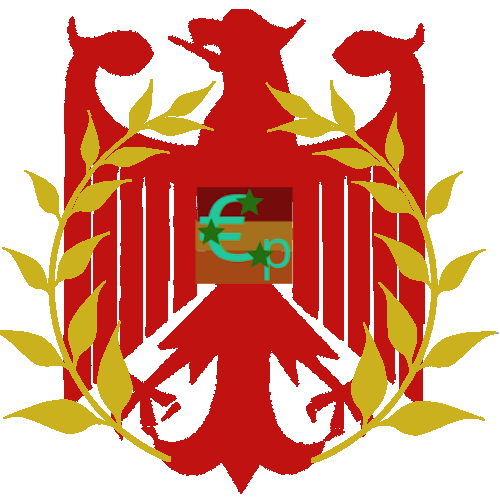
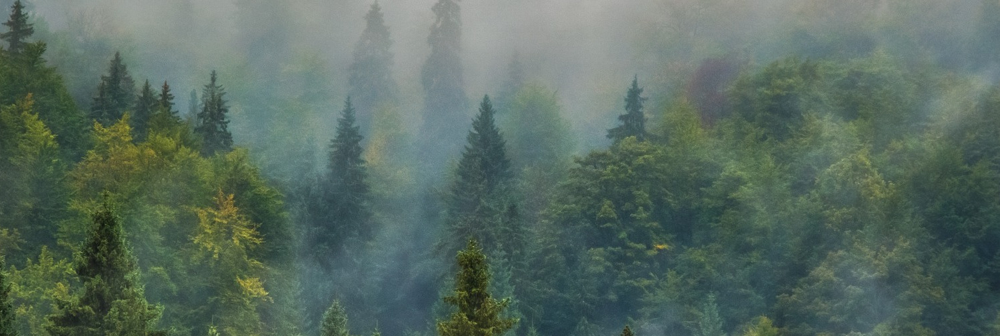

Paper Social

License (nitter)

Johan Sebastian Werng
@JohanUP
Parsovia, Unión Papelera
Se unió en Octubre de 2022
Comisario de pinos y piñones. Afiliado al
@PPE
Comunicaciones
Johan Sebastian Werng
@JohanUP
Oct 27
Hoy he participado en la cumbre sobre reforestación con el presidente del estado de Villadomiciana
Fin